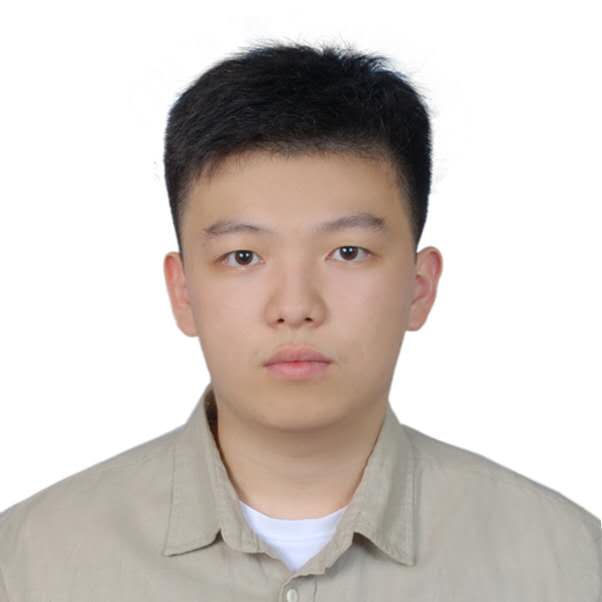

This platform was initiated to address the long-standing lack of systematic translation tools between the Dongxiang language and Chinese.
By leveraging modern technologies in natural language processing and machine learning,
we aim to support the preservation, learning, and communication of the Dongxiang language,
while contributing to the digital protection and dissemination of minority languages.
Core Team Members

Dongxiang Translation Platform · Co-founder & Technical Lead
Tencent WeChat Division · Data Science Intern (2025)
Northwestern University · M.S. in Machine Learning & Data Science (Class of 2026)
University of North Carolina at Chapel Hill · B.S. in Statistics & Biology (Class of 2025)
East China University of Political Science and Law · National College Entrance Exam Admission (2021)
Has a solid foundation in data science and machine learning,
with research interests spanning natural language processing and deep learning. Proficient in SQL, Python, and R,
and experienced in leveraging libraries such as pandas, NumPy, scikit-learn, and SciPy for data analysis and modeling.
Skilled in both supervised and unsupervised learning algorithms and their practical applications. In this project,
led the development of the Dongxiang ↔ Chinese translation system based on Meta’s NLLB model, integrated AI agent–driven grammar-rule–based
data generation methods, and oversaw end-to-end data processing, including cleaning, feature engineering, and statistical analysis.
Additionally, designed and deployed the project website.

Dongxiang Translation Platform · Co-Founder & Chief Scientist
Space Auto · Business Analytics Intern (2024)
China Energy Investment Corporation, North China Region · Intern (2025)
University of California, San Diego · M.S. in Quantitative Finance (Class of 2026)
University of North Carolina at Chapel Hill · B.S. in Statistics & Data Science (Class of 2025)
Possesses a solid background in data science and machine learning, with research interests spanning natural language processing and deep learning.
Participated in designing the overall technical roadmap and core algorithmic framework of the platform, and the development of a Dongxiang ↔ Chinese translation engine based on the Transformer architecture.
In the project, proposed and implemented innovative model optimization strategies, significantly improving translation performance under low-resource conditions,
and spearheaded the design of a grammar rule–based data generation method.
Beyond model development, contributed to the entire data processing pipeline, focusing on the collection, construction, cleaning, and alignment of Dongxiang language corpora.
As Chief Scientist, with proficiency in SQL, Python, and R as well as major machine learning frameworks, emphasized both academic research
(multilingual translation, digital preservation of minority languages) and practical applications. Integrated cutting-edge AI techniques into real-world deployment,
advancing the platform into a stable and scalable research and engineering system.
Methodology Overview
To be added.
Contact Us
Email: dongxiangtranslationproject77@gmail.com
本平台旨在填补东乡语与汉语之间长期缺乏系统翻译工具的空白。我们希望通过技术手段为东乡语的传承、学习与交流提供支持，推动少数民族语言的数字化保护与传播。
主要团队成员
东乡语翻译平台 · 联合创始人 & 技术负责人
腾讯微信事业群 · 数据科学实习生（2025年）
美国西北大学 · 机器学习与数据科学硕士研究生（2026届）
北卡罗来纳大学教堂山分校 · 统计学 & 生物学双专业（2025届）
华东政法大学 · 高考录取（2021年）
具备扎实的数据科学与机器学习背景，研究兴趣涵盖自然语言处理与深度学习。
熟练掌握 SQL、Python 与 R 等编程语言，能够高效运用 pandas、NumPy、scikit-learn、SciPy 等常用数据分析与建模工具，
并对常见的监督学习与无监督学习算法具有系统理解与实践经验。在本项目中主导基于 Meta NLLB 模型的东乡语 ↔ 汉语翻译系统研发，
结合 AI agents 设计语法规则驱动的数据生成方法，并负责全流程的监督与具体开发工作。
东乡语翻译平台 · 联合创始人 & 首席科学家
Space Auto · 商业分析实习生（2024年）
国家能源投资有限公司华北区 · 实习生（2025年）
美国加州大学圣地亚哥分校 · 量化金融研究生（2026届）
北卡罗来纳大学教堂山分校 · 统计学 & 数据科学双专业（2025届）
北卡罗来纳大学教堂山分校 · 统计学 & 数据科学双专业（2025届）
具备扎实的数据科学与机器学习背景，研究兴趣涵盖自然语言处理与深度学习。设计了平台整体技术路线与核心算法框架，牵头开发基于 Transformer 架构的东乡语 ↔ 汉语翻译引擎。
在项目中负责提出并实现创新的模型优化方案，大幅提升了在低资源数据条件下的翻译性能，并主导设计基于语法规则的语料生成方法。
除模型研发外，同时参与数据处理的全流程工作，主要负责东乡语语料的搜集、构建、清洗与对齐。作为首席科学家，在熟练掌握 SQL、Python 与 R 等编程语言以及相关相关机器学习框架的基础上，
既关注学术前沿（多语翻译、少数民族语言数字化保护），又注重落地实践。将前沿 AI 技术与实际应用结合，推动平台形成稳定、可扩展的科研与工程体系。
方法简介
等待补充。
联系我们
邮箱：dongxiangtranslationproject77@gmail.com